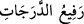

cevap verirler: Var etme hitâbı, anlamayla ilişkili olmadığı ve bir varlık açısından en
büyük çıkar olan “var olma”yı içerdiği içindir ki “yok”a taalluk edebilmiştir.
Keşfü’l-esrâr’da şöyle der: “Var olacak şey,” Cenâb-ı Hakk’ın sözünü ikiletmeden
bir kerede oluverir.
Tekmile’de şu açıklama yer alır: Yüce Allah’ın “Ol!” emri, emre konu olan şeyin
varlığından ya öncedir veya sonradır. Üçüncü bir ihtim“l yoktur. “Emir varlığından
önce verilmiştir” denecek olursa, bu “yok”a hitâb edilmesi anlamına gelmiş olacaktır.
Oysa böyle bir şey aklen sahih değildir. “Emir varlığından sonra verilmiştir” denmesi
durumunda ise “Ol!” denmesi diye bir şey söz konusu olamaz. Çünkü emre muhatap olan
şey zaten var olduğundan var olan bir şeye “Ol!” demenin anlamı yoktur. Bu açıklamaya
şöyle cevap verilir: Emir, emredilen şeyle eş zamanlıdır; yâni ne öncedir ne de
sonradır. Daha “Ol!” derken, var oluvermiştir. Bu, cevherdeki hareket ve hareketsizlik
sükûn problemine benzer.
Söz gelimi, bir yerde hareketsiz duran bir cevher farzedecek olursak; bunun daha
sonra bir başka yere intikal etmesiyle tabii ki hareket ederek intikal etmiş olacaktır.
Böylece hareket olgusu mutlaka ya ilk yerde ya da ikinci yerde gerçekleşmiş olacaktır.
Üçüncü bir ihtimal yoktur. İlkinde gerçekleştiği söylenirse, hareketsizlikle ortak bir
hareket olmuş olacaktır. İkincisinde gerçekleştiğinin söylenmesi durumunda ise, cevher
hareketsiz intikal etmiş (gibi) olacaktır. “Ne onda ne de bunda gerçekleşmiştir” denecek
olursa, hareketin, herhangi bir mahal olmaksızın gerçekleştiği söylenmiş olur ki bu
ihtimallerin tamamı muhâldir. Buna verilen cevap da şudur: Hareket öyle bir mânâdır ki
salt ikinci yerle ilişkilidir. Dolayısıyla birinci yeri boşaltması da ikinci yeri meşgul
etmesi de aynı şeydir.
Bilesin ki Cenab-ı Hak, yirmisekiz harf indirmiştir. Bunların hakikatlerini de “__WORD__: dereceleri yükselten” (el-Mümin 40/15) âyetinde genişçe açıklandığı üzere
yirmisekiz mertebe kılmıştır. El mafsallarını da, başparmak hariç, her parmakta üç
mafsal ve bir elde ondört diğer elde ondört olmak üzere yirmisekiz yapmıştır. Her bir
parmağı da beş asıldan birinin tecelligâhı kılmıştır: Meselâ başparmak kudret
tecellîgâhıdır. İşaret parmağı hayat tecellîgâhıdır. Orta parmak ilim tecellîgâhıdır.
Yüzük parmağı irade tecellîgâhıdır. Serçe parmağı ise söz tecellîgâhıdır. “İlim” en
kuşatıcı sıfat olduğundan, sağındaki iki asıl olan “hayat ve kudret” ile solundaki iki asıl
olan “irade ve söz”ün ortasında gelmiştir. “Kudret aslı”nda bir mafsalın eksik olmasının
sebebi şudur: Çünkü kudretin aksine diğer dört sıfatın taalluku (varlık ve olaylarla
ilişkilenmesi) daha kapsamlıdır. Kudretin hükmü ise öyle sınırsız olmayıp bir miktar
kısıtlıdır. Çünkü kudret ancak varlığı mümkün olan şeylere taalluk edebilir. Bu
bakımdan etki ve nüfûzu genel değildir. Kudretin hükmü böyle genel olmadığı içindir ki
tecellîgâhı olan başparmak da iki mafsala sahip kılınmıştır. Yine kudretin durumu
müphem olduğu; kudrete konu olan şeye nasıl taalluk ettiği hususu da (tıpkı bu ayette
olduğu gibi) bir miktar bilmecemsi olduğu için, bu tecellîgâha Arapçada “ibhâm”
(müphemlik) adı verilmiştir. Dolayısıyla kudretin, kudrete konu olan şeye nasıl taalluk